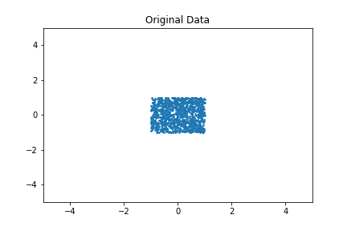
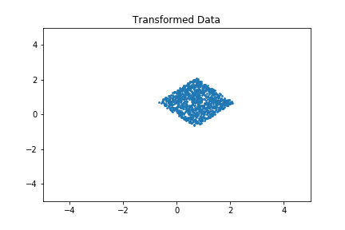

Here is just a short note on how to do an affine transformation in python succinctly.
Code
import numpy as np
import matplotlib.pyplot as plt
data = np.ones((1000,3)) # needed for the transformation
data[:,0:2] = np.random.uniform(low=-1,high=1,size=(len(data),2)) # create some data
deg = np.pi/4 # 90°
rot = np.array([
[np.cos(deg),-np.sin(deg),0],
[np.sin(deg), np.cos(deg),0],
[0 ,0 ,1]])
trans = np.array([
[1,0,1],
[0,1,0],
[0,0,1]])
# this is where the magic happens
data = data.dot((rot@trans).T)[:,:2]
So, doing an affine transformation with a dataset is, given the transformation matrix, actually a one-line in Python with numpy.
Result
Before the transformation:

After the transformation:
